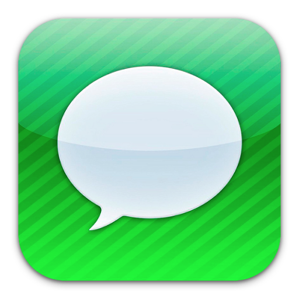

Text Messaging
Why Worry About Encryption
One of the cornerstones of online privacy is how you choose to communicate. Beyond email, the next communication behemoth is text messaging. What application you use to send your messages through may be something you've never considered.
Why not just open your default text app and shoot off a quick message using SMS (this stands for "short message service" and is the traditional technology that most telephone, internet, and mobile-device systems use)? Because "identity theft can happen to anyone."[1] All it would take for a hacker to get started is your name and mobile number.
| Geek Tip: There is an "increasingly common trick called phone account hijacking."[2] Once a wannabee hackers gains access to your phone account, this can then lead to a SIM swap. All the hacker needs to do is call your mobile carrier, convince them they are you, cancel your SIM card (a piece of technology inserted into your phone that contains unique identification), and issue a new one to them, thereby allowing SMS interception. That is, the hacker can send and receive SMS text messages as if they were you. |
Okay, so no SMS. How about iMessage? Snapchat? Skype? Instagram Messaging? Twitter? Facebook Messenger? Google Allo?



The answer hinges on end-to-end encryption (or lack thereof). "Today, end-to-end encryption is part of your daily digital life. It is actually the ultimate security mechanism that protects your sensitive and private data online, like your credit card number during a transaction, or your phone call which is being wiretapped."[3] But what is it? "Encryption involves turning your data into a scrambled form such that it is impossible for any party intercepting it to read, understand and make any sense of it, except the recipient to whom it is intended. When it reaches this rightful recipient, the scrambled data is changed back to its original form and becomes perfectly readable and understandable again."[4] Whenever possible, you should always send your personal communications in an encrypted form. You may be shocked to know that most messaging apps (1) do not offer end-to-end encryption, (2) if available, do not turn end-to-end encryption on by default, and/or (3) do not encrypt backups.
So, why not use WhatsApp? After all, WhatsApp uses Signal's encryption and has over "1.2 billion active users."[5] "There are many things to criticize Facebook for; running a product that deployed end-to-end encryption by default for over a billion people is not one of them."[6] WhatsApp is certainly a better option than, for example, SMS. However, the answer is simple: it's owned by Facebook. "Facebook will have data indicating who WhatsApp users communicate with and how frequently, and connecting WhatsApp users with their social media accounts and broader online activity, associations, political affiliations, and more."[7] Additionally, WhatsApp encryption only comes into play when sending messages. "Once messages are on your phone, they rely on your phone's built-in encryption to keep them safe (which is why it's important to use a strong passcode). If you choose to back up your phone to the cloud -- such as to your Google account if you're an Android user or your iCloud account if you're an iPhone user -- then you're handing the content of your messages to your backup service provider."[8] That is one of many reasons why I recommend using Signal. "Signal doesn't include any of your messages in this backup."[9]
If you are intent on sticking with old school SMS, than at a minimum limit the sensitive information that is sent through it. If you tend to communicate with your friends and family across multiple websites and applications, "rather than just chugging along with a dozen chat apps, letting your notifications pile up, it's time to pick one messaging app and get all of your friends on board."[10]
"Even Edward Snowden recommends it--and he should know which apps are the best for stopping unwanted snooping."[18]
How to Make the Switch
- Install Signal on your smart phone and/or desktop (iOS | Android | Desktop). It uses your mobile number to identify you to your contacts, so there is no username or password to remember.
- Get your friends, family, and colleagues on board by texting them the download link (signal.org/download) and encouraging them to make the switch .
- Start chatting.
Additional Articles
- Micah Lee, "Cybersecurity for the People: How to Keep Your Chats Truly Private With Signal," The Intercept_, May 1, 2017.
- Laura Hautala, "Why you need a better handle on the WhatsApp, Signal and Telegram apps," CNET, August 14, 2018.
- Brian X. Chen, "Worried About the Privacy of Your Messages? Download Signal," The New York Times, December 7, 2016.
Footnotes
[1] Brian Barrett, "How Even the FTC's Lead Technologist Can Get Hacked," Wired, June 9, 2016.[2] See footnote 1.
[3] Nadeem Unuth, "What is End-to-End Encryption?," Lifewire, September 5, 2018.
[4] See footnote 3.
[5] Daniel Sparks, "How Many Users Does WhatsApp Have?," The Motley Fool, April 6, 2017.
[6] moxie0, "There is no WhatsApp 'backdoor'," Signal, January 13, 2017.
[7] Brian Barrett, "WhatsApp's Privacy Cred Just Took a Big Hit," Wired, August 25, 2016.
[8] Micah Lee, "Battle of the Secure Messaging Apps: How Signal Beats WhatsApp," The Intercept_, June 22, 2016.
[9] See footnote 8.
[10] Jordan McMahon, "Ditch All Those Other Messaging Apps: Here's Why You Should Use Signal," Wired, November 5, 2017.
[11] "signal.org," Signal.
[12] See footnote 10.
[13] See footnote 11.
[14] See footnote 11.
[15] See footnote 11.
[16] See footnote 8.
[17] See footnote 11.
[18] David Nield, "What Is Signal Private Messenger - How to Use the Signal App," Popular Mechanics, March 28, 2017.